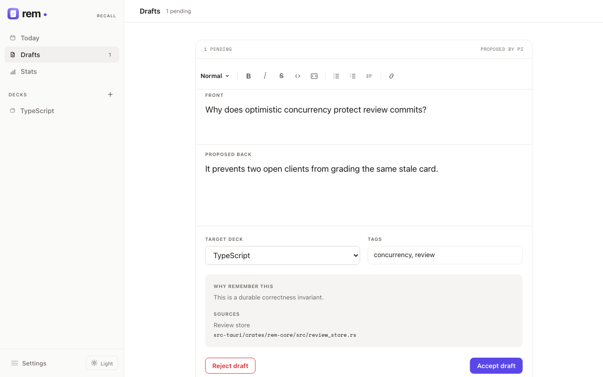
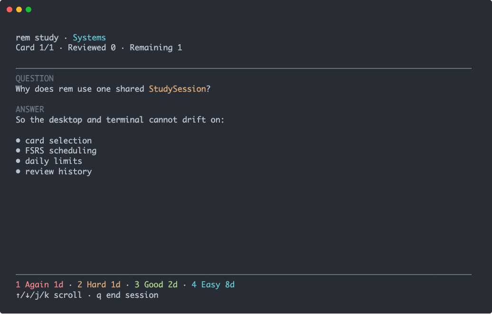

Local by default
Your decks, cards, assets, and complete review history live on your device.
A memory layer for AI-assisted work
rem turns insights from your work with agents into source-grounded recall prompts. You choose what matters; FSRS helps it stick.

A deliberate capture loop
Generated content never becomes a scheduled card by accident. Every prompt passes through a simple, inspectable workflow.
Keep coding, researching, or writing with your agent as usual.
The agent proposes a concise draft with its rationale and source.
Answer it, edit it, and accept only what belongs in your study plan.
FSRS-6 schedules each review to build durable recall efficiently.
Approval, not autopilot
Agent proposals remain local, editable, and unscheduled until you accept them. See why a card matters and where it came from before it joins your reviews.
One review engine
Desktop and terminal reviews use the same Rust StudySession. Card selection, scheduling, daily limits, and history cannot drift apart.

Built to remain yours
Your decks, cards, assets, and complete review history live on your device.
FSRS-6 adapts to your memory with configurable retention and learning steps.
Capture source-grounded drafts from Codex, Claude Code, pi, or your own scripts.
Write naturally with code highlighting, images, GIFs, links, lists, and tags.
Sync through any remote using your existing Git credentials—no stored token.
Track recall, activity, streaks, grade distribution, and deck performance.
Start remembering
Install the desktop app and CLI together on macOS or Linux, or download the package for your platform from GitHub Releases.
View all downloads$ curl -fsSL https://raw.githubusercontent.com/shettyh/rem/main/install.sh | sh
$ npx skills add shettyh/rem --skill rem-card-capture --global
Windows installers and a standalone CLI zip are available from Releases. Current macOS and Windows builds are unsigned; see the launch instructions.
Remember what matters